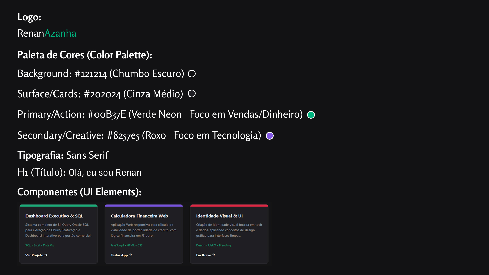

Design System RenanAzanha
Documentação oficial da identidade visual desenvolvida para este portfólio. O objetivo foi criar uma interface "Dark Mode" que reduzisse a fadiga visual, usando cores neon para guiar a atenção do usuário para as ações principais (CTAs).
